プログラミング は今や小学生の必修科目となる重要スキル。しかし、立教大学ではプログラミングを学べる機会が少なく、また、習おうと思えばお金を払いプログラミング教室に通う他ありません。そこで、大学生が集まって 高め合いながらサービスを作れる場が欲しいという先代立教生の方々の熱い想いから、このサークルは作られました。サークルメンバーの目的は多岐にわたり、「就活で有利に」「起業するための手段として」「教養として」「興味があるから」など人それぞれです。このサークルでは、その一人一人の目的に合わせて、初めに先輩に教えてもらい、基礎ができたら自分のサービスを作る＆新しい後輩に教えるという流れを通してプログラミングスキル を身につけていきます。教えるのは 大学生 、教わるのも 大学生 なので気軽に質問でき、互いに刺激を受けながら、楽しくわいわい学べます！！